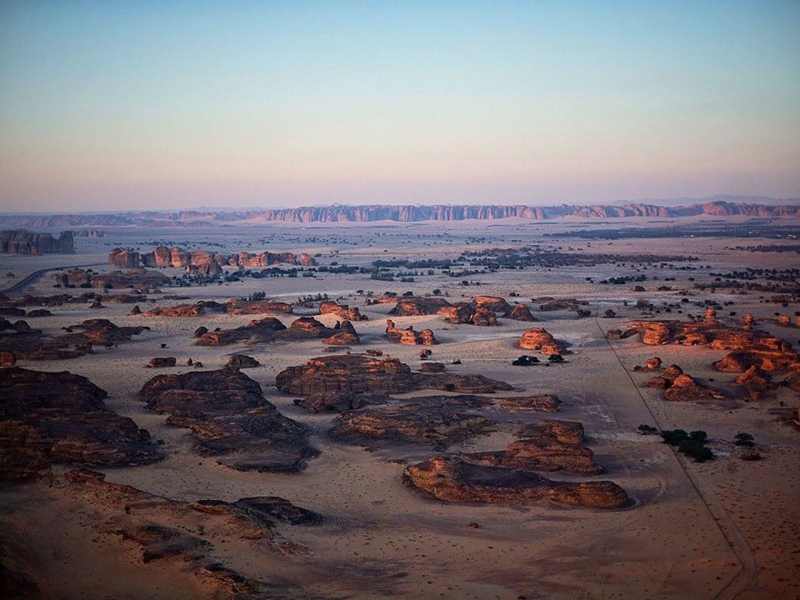

Sharaan Nature Reserve Master Plan
Master plan · AlUla, Saudi Arabia
WATG's master plan for the Sharaan Nature Reserve in AlUla for the Royal Commission for AlUla (2021-2022). PUD contributed as master planning and sustainability subject-matter expert.


More from AlUla
 AlUla Strategic Framework PlanAlUla · 2022
AlUla Strategic Framework PlanAlUla · 2022 Khaybar Heritage Area Master PlanKhaybar, AlUla · 2020
Khaybar Heritage Area Master PlanKhaybar, AlUla · 2020 AlUla County Infrastructure Master PlanAlUla · 2019-2020
AlUla County Infrastructure Master PlanAlUla · 2019-2020 Jabal Thabeer Park (Mina, Makkah)Mina, Makkah · 2025
Jabal Thabeer Park (Mina, Makkah)Mina, Makkah · 2025 Kidana Al Khaif (Mina, Muzdalifah and Arafat)Makkah (Mina, Muzdalifah, Arafat) · 2024-2026
Kidana Al Khaif (Mina, Muzdalifah and Arafat)Makkah (Mina, Muzdalifah, Arafat) · 2024-2026 Jorhum DestinationMakkah · 2026
Jorhum DestinationMakkah · 2026